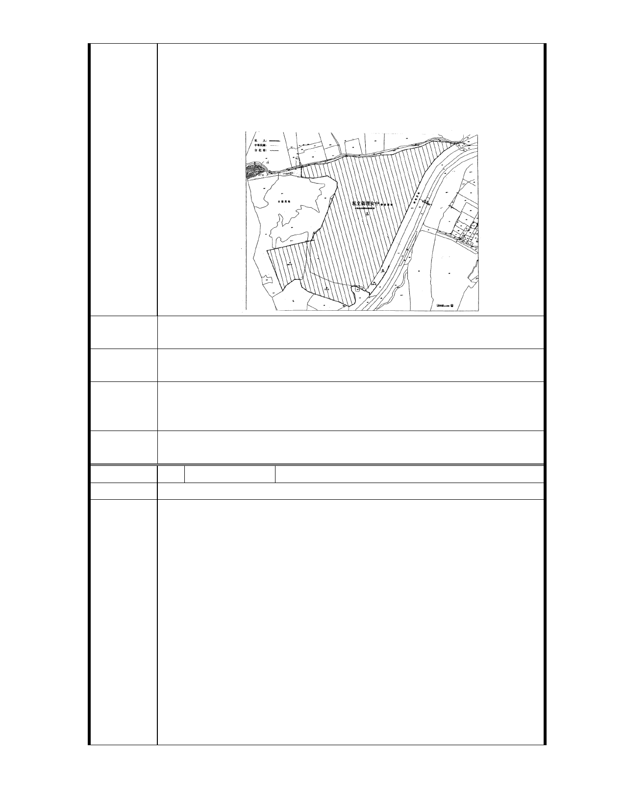

座公園，然每年培育近 1300 位莘莘學子之學校校區內卻仍規劃
為「綠地用地」，此實令人費解。
3. 職是之故，懇請貴會一本關心教育、愛護私校之心，將此五十
年來即作為教育用地之「綠地用地」，變更為「私立衛理女中學
校用地」
建議辦法
懇請貴會將本校校區內之「綠地用地」變更為「私立衛理女中學
校用地」
第 3 次專案 衛理女中前綠地，同意納入本次通盤檢討變更為學校用地，並依
小 組 結 論 發展局建議僅得作為該校開放空間使用以延續綠廊效果。
第
小
4 次專案
組結論
私立衛理女中臨至善路側綠帶變更綠地用地為私立衛理女中用
地，因現況高程問題導致綠帶功能不彰，考量產權及現況使用，
同意依都市發展局所提修正計畫。
委
決
員
會
議
依專案小組結論辦理。
編 號 49 陳情人 林進亮
建 議 位 置 士林區至善段三小段 80、82、136、137 地號
為本人名下所有之臺北市至善段三小段地號：80、82 等兩筆
土地，原先為本人父親民國 62 年間購買，因被列入保護區數十年
，始終無法進行任何開發，影響權益甚鉅，同時也影響該地區發
展，多年以來，已經反映多次始終因為法令關係而無法獲得許可
。
近聞貴局正在進行「臺北市士林區外雙溪地區都市計畫通盤
檢討」案，並已公布主要計畫內容，因此，建請貴局能考慮將上
陳 情 理 由 述地號變更為住宅區，理由如下：
1. 上列地號土地雖然被列為保護區，但其緊鄰住宅區土地，多年
以來，該地區地質結構穩定，所興建之住宅安全無虞，尤其是
地號 80 之土地，地形平坦，若能興建住宅，俾能提供環境優美
之居住環境。
2. 上列地號緊鄰本人母親名下之同段地號 136 及 137，其中 136
地號為公共設施保留地之道路用地，而 137 為兒童遊樂設施保
留地，顯見政府多年以前就已經計畫開發本土地，因而劃設計
- 65 -